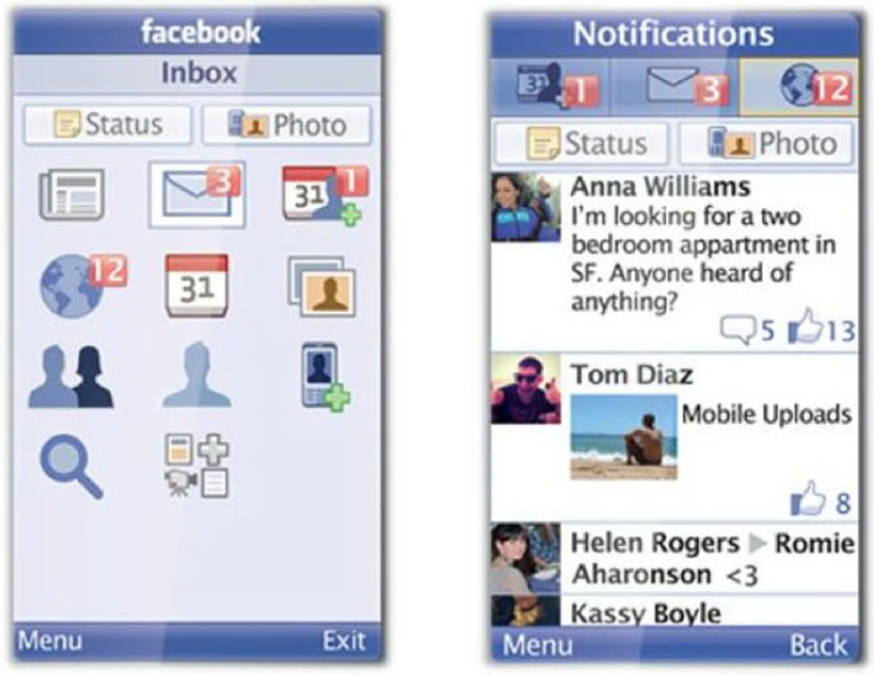

Tôi lớn lên trong một gia đình nông dân bình thường. Từ nhỏ, tôi đã rất thích khám phá thế giới xung quanh. Tôi còn nhớ, có lần tôi vì muốn trả lời cho câu hỏi "Vì sao ánh nắng lại mang đến sự ấm áp?!", tôi đã ngước nhìn lên bầu trời, và thế là... tôi đã bị choáng và say nắng, làm mẹ tôi phải lo lắng mấy ngày liền. Vì cái tính ham học hỏi đó, lên lớp 5, tôi được cha mua cho chiếc điện thoại đầu tiên. Các bạn biết không, thời đó (khoảng năm 2013) mà có được một chiếc điện thoại có thể truy cập Internet là ước muốn của rất nhiều người. Cha tôi đã dành dụm một thời gian dài để lén mẹ mua cho tôi chiếc điện thoại ấy.
Đây là chiếc điện thoại Nokia 220. Đấy là chiếc điện thoại bấm nút của hãng Nokia huyền thoại. Mặc dù vậy, nó có thể lên mạng được, khác mượt. Tôi rất thích chiếc điện thoại này!
.jpg)
Tôi bắt đầu thử tìm hiểu Internet là gì, tôi lên mạng, truy cập vào Facebook, xem Youtube.
Tôi còn nhớ, lúc ó đám con trai rất thích coi Kenhsangtao.com một kênh chuyên hướng dẫn chế tạo những món đồ siêu ngầu của những thằng con trai... Và còn nhiều thứ hay ho khác mà tôi được tiếp xúc nữa.
Và thế là một ngày, tôi dùng chiếc điện thoại Nokia 220 ấy nhắn tin với một chị lớn hơn 1 tuổi...
Tôi còn nhớ rất rõ, hôm đó cũng như thường ngày, tôi lướt Facebook với giao diện của Opera (Trình duyệt web cho điện thoại di động bấm nút)

Ảnh UI của Facebook ngày trước (Hồi 2013)
Vẫn như thường ngày, tôi dùng các phím trên điện thoại, di chuyển lên xuống, xem các bài đăng mới của mọi người.
Cảm giác chill lắm! Và thế là tôi lướt đến phần "Đề xuất kết bạn". Tôi thấy một người cũng dễ thương. Tôi chợt nhận ra đó là người chị của bạn tôi!
Và tôi muốn tìm hiểu thử. Bấm kết bạn, vào phần nhắn tin, chào hỏi vài câu...